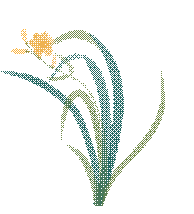
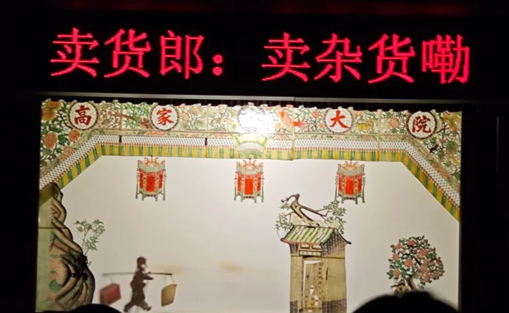
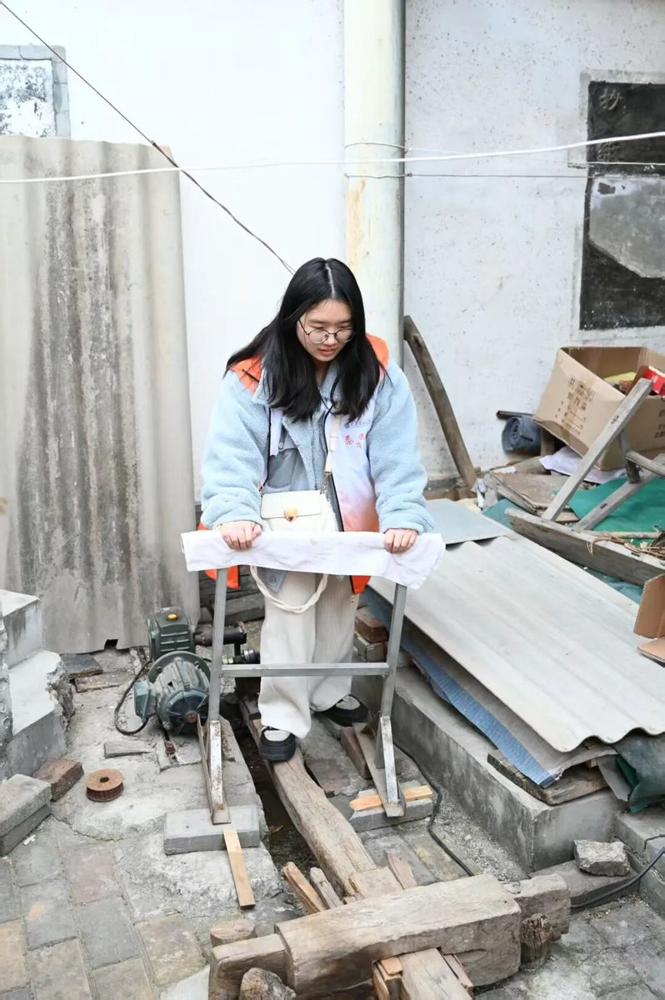
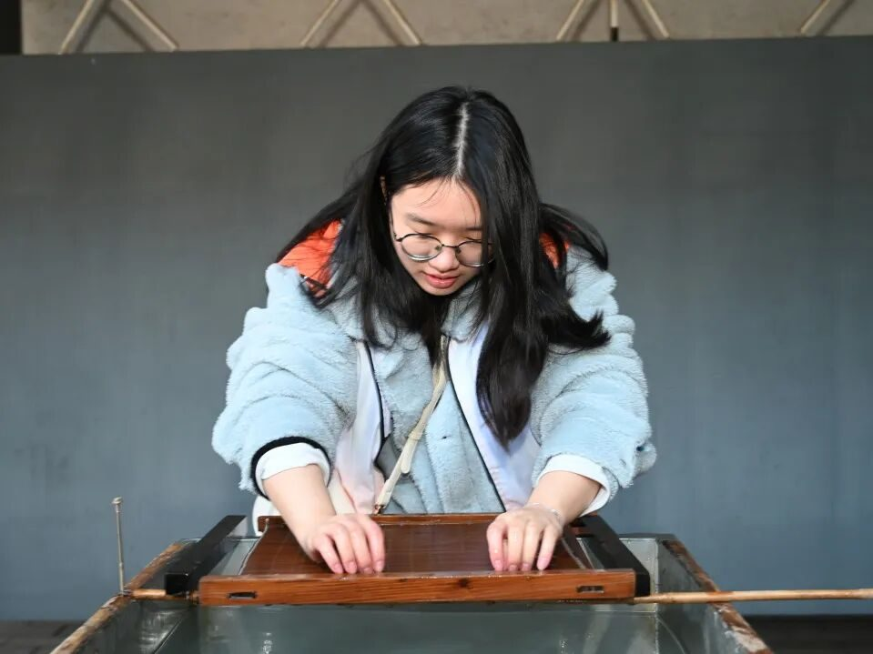

回顾往昔，我的心中充满了感激与期待。感激有机会能够亲身体验并学习到这么多宝贵的知识；期待未来能有更多的机会参与到类似的实践中，为非遗文化的保护和发展贡献自己的一份力量。


行者无疆∙秦育遗韵
从西安碑林博物馆的专业讲解到西建松林非遗博物馆的手工艺体验，再到高家大院中皮影戏的观赏，这些经历不仅拓宽了我的视野，更让我深刻理解到传统文化的丰富性和多样性。尤其是在与特殊孩子们一同观看鼓乐表演时，我看到了音乐跨越障碍的力量，它能触动每一个心灵，不论年龄或背景。这一周里，每一天都是一次新的发现，每一次活动都像是打开了一扇通往过去的大门，使我对“非遗”有了更为直观和深入的理解。
实
践
感
悟

在实践活动中，最令我感动的是与非遗传承人面对面交流的机会。无论是长安古法造纸的马松胜老师，还是易俗社的艺术家们，他们每一位都是文化符号，是历史与现代之间的桥梁。通过他们的讲述和示范，我感受到了那份对传统技艺的热爱与执着，以及背后付出的心血。这种精神深深打动了我，也使我更加深刻地明白保护和传承非遗不仅是保存古老的艺术形式，更是维护我们民族的身份认同和社会凝聚力。
-END-
来源 | 行者无疆实践团
图片 | 行者无疆实践团
文字 | 邓 雪
编辑 | 郑瑞瑄
审核 | 李凌志 杩健辉
责编 | 邹靓靓